和 Codex 一起工作 · 独立专题
会让 AI 写文章、做图片，也许已经做过自己的网页。下一次，还想试点什么？
一个装在手机里的小应用，一个收到表格就能返回处理结果的机器人，一个能转到背面看的收纳架模型，或者一套换了名单就能重新生成证书的程序，都可以成为下一件想试的作品。
有些东西以前没有想到，往往是因为没有接触过它的制作方式。认识更多具体成果，就多了几个可以开始的地方。
下面是一份按常见名称和制作领域展开的探索清单。可以从熟悉的地方读，也可以直接找到感兴趣的一组。网站、Agent、机器人、自动化之间会有交叉：同一个研究助手可以放在网页里，也可以接进聊天平台。遇到这种关系，表格和讲解会就近说明。
每组表格保留三列：具体交付物、能做什么和在哪里用，以及一句可以直接开口的交办示例。可以照着第三列开始，再补自己的材料、目标平台和使用习惯。文中的作品是说明性设计示例，具体实现需要先调查工具与条件。
这些示例适合发给能够查资料、使用工具或协助制作的 AI；如果当前对话只能提供方案，也可以先让它把制作路径讲清楚。每次交办还可以统一补一句：
请先研究适合的方法，做一个简单可用版本，说明交付什么、怎样打开或运行，需要哪些软件、账号、模型或接口。
这段共同要求不必在每一行重复。工具和 API 的必要条件放在各组讲解里，需要时再深入。
先分清一个关系：制作时用了 AI，成品运行时未必需要 AI。 图片和视频生成后可以直接播放；清单、计算器和批处理程序也可以按规则运行。需要模型参与判断时，才进一步安排模型连接。这里的“本地可用”或“无需外部 API”只针对所描述的基础用法。
浏览器里可以放文章，也可以放一件能筛选、比较、计算的小作品。先从最容易打开的入口开始。
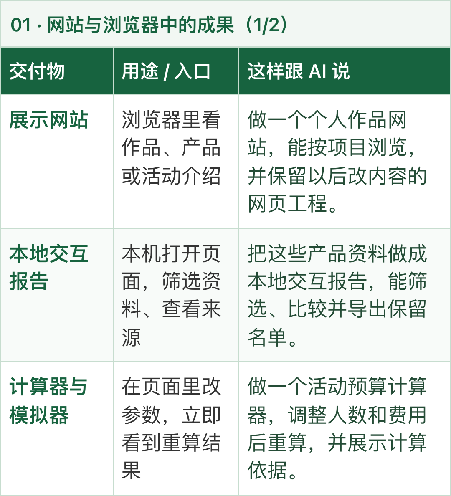
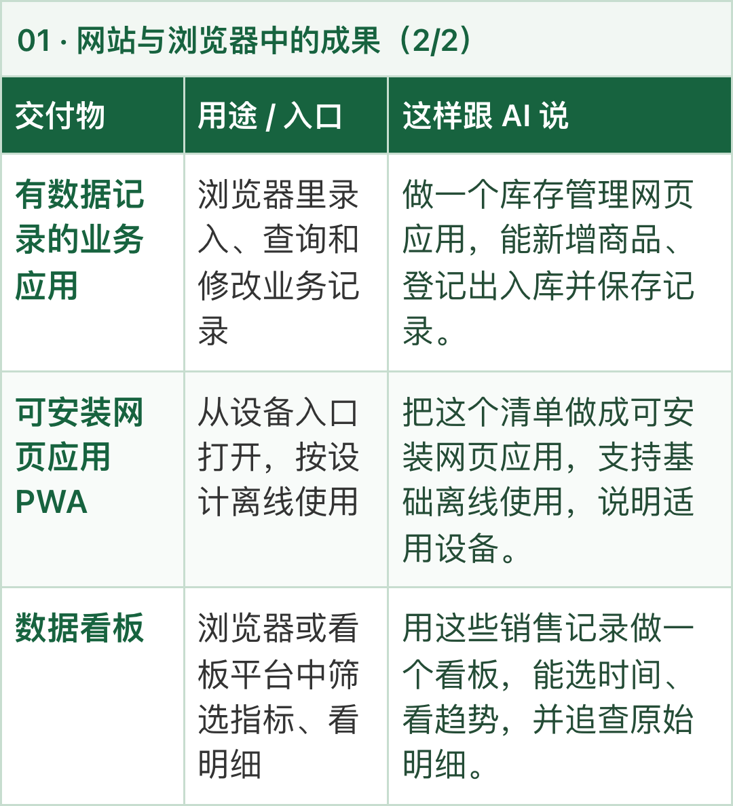
例如，想比较几款雨衣，可以设计一个小页面：图片和关键参数并排，勾选“能覆盖背包”，只看符合条件的款式；点开一条结论，就能回到来源。
做完比较后，还可以让页面导出保留名单，交给 AI 继续研究。点击本身不会自动变成 AI 知道的信息，需要保存、导出或实际连接。第一次可以只放几款产品，亲自筛选一次，再决定要不要增加功能。
制作与运行条件：制作这组作品通常需要网页代码、图表或界面工具。静态资料可以随页面保存，交互报告有时需启动本地服务；持续保存、多人访问或实时更新，则要安排后台和数据连接。PWA 的安装与离线能力需按目标设备核对，筛选结果要保存或导出后才能交回 AI。
做过网站之后，还可以试着把一个小想法放进手机、电脑菜单栏或常用平台，让它有一个固定入口。
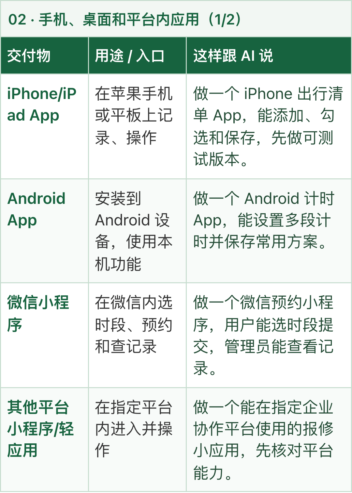
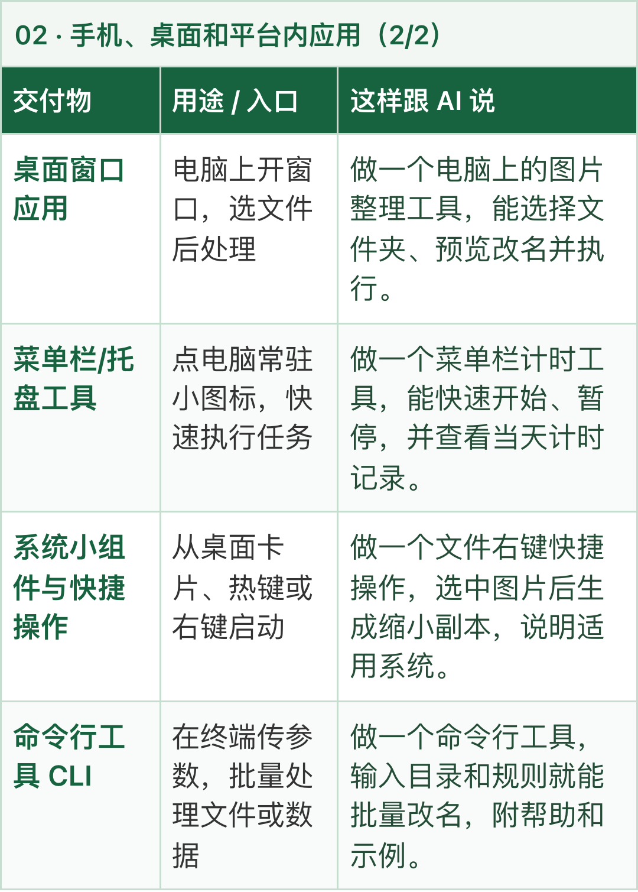
可以试做一份自己的出行打包清单。新建“周末露营”，加入帐篷、头灯和雨衣；装进包里的物品点一下勾选，下次出行复制清单继续用。
做成网页，就从浏览器进入；做成 App，就从手机图标打开；做成微信小程序，就在微信里使用。第一次选一种载体即可。保存到本机和跨设备同步需要不同设计，普通勾选功能则可以完全按规则运行。微信官方示例提供独立的小程序工程与开发工具入口，网页与小程序仍需分别适配。微信小程序示例
制作与运行条件：工具取决于载体：苹果应用常用 Xcode 与平台 SDK，Android 需要对应 SDK 和构建工具，小程序依赖各自平台，桌面工具可研究原生工具链、Electron 或 Tauri。设备权限、签名和安装分发条件需要单独确认；代码生成后不自动等于已经安装或上架。基础本地功能通常不需要外部模型接口，云同步等功能另配服务。
有些作品适合长在已有软件里：网页上的摘录按钮、表格里的检查命令、设计软件中的批量操作，都可以单独做出来。
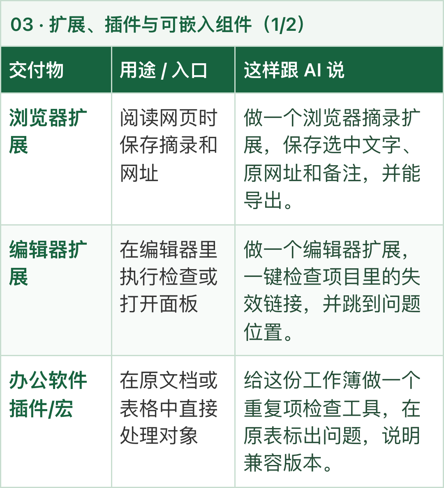
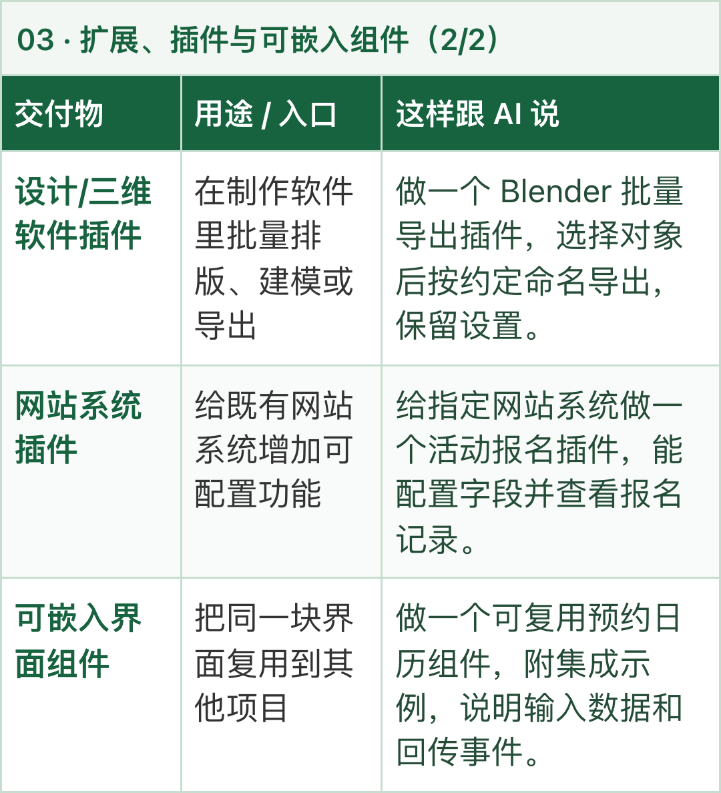
设想阅读文章时，选中一段文字，点一下按钮，就把摘录、网址和备注保存起来。可以先做一个只在指定网页生效的扩展，试试是否顺手，再增加导出或同步。
只保存原文和备注，可以不调用模型；要自动摘要，再加相应连接。Chrome 官方教程展示了给页面加入阅读时间提示的小扩展，类似的“小功能”本身就能成为完整作品。Chrome 扩展教程
这里的插件要写出宿主：浏览器扩展、办公宏和三维软件插件各有自己的接口与安装方法，不能只交一个叫“插件”的压缩包。
制作与运行条件：每个插件都依赖明确的宿主及版本。浏览器扩展使用扩展接口，办公宏或插件依赖对应办公软件，设计插件依赖设计软件的脚本/插件能力。是否需要外部 API 由功能决定：本地保存和规则处理可以不接模型，摘要或联网查询再配相应连接。可嵌入组件还需附输入、输出和集成示例。
Agent 这个名称下面，可能是平台中的一个助手，也可能是自己电脑上的程序，或者服务器上的任务系统。先看具体交付，再理解它怎样工作。
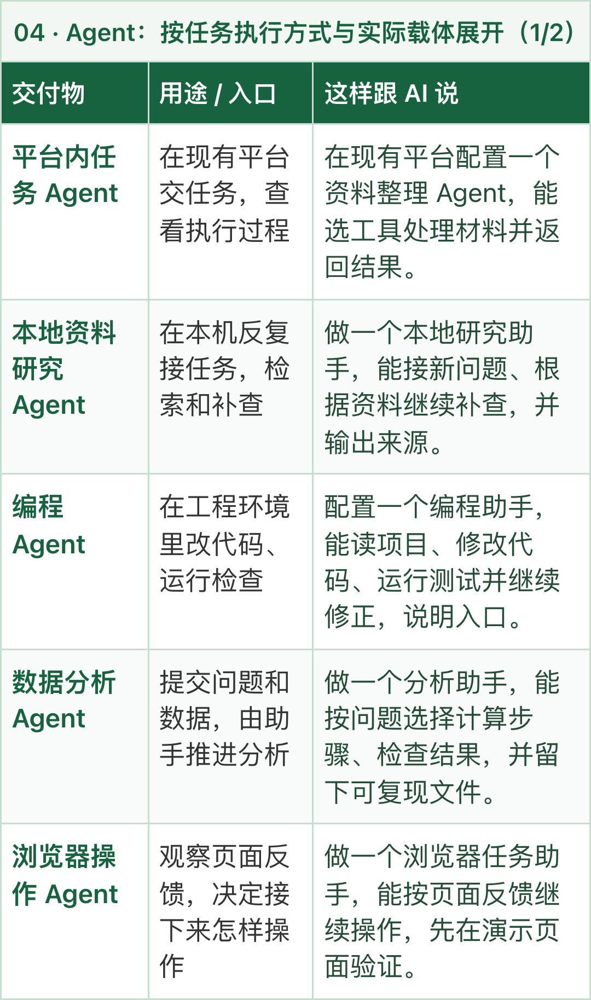
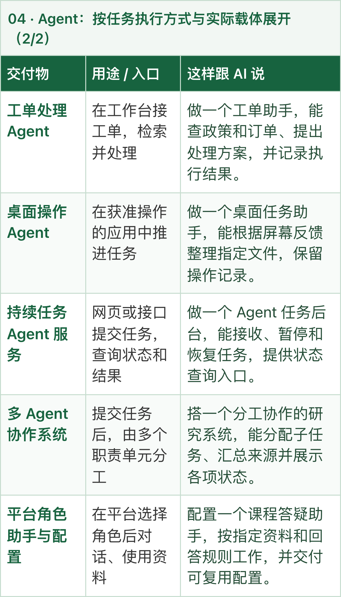
设想做一个资料研究助手：接到问题，先检索指定材料；发现关键数字没有出处，就继续补查；资料足够后整理结论并保存来源。模型参与决定下一步，程序负责调用工具、取得反馈，再把结果带入后续判断。这是本文使用的任务 Agent 含义。Agent 与工作流的区分
它可以运行在本机，通过终端或本地页面接任务；也可以运行在服务器，供网页调用。模型可能由现有平台提供，也可能连接云端服务或合适的本地模型。本地模型也有调用接口，“不接云端 API”不等于程序内部没有接口。Ollama 本地与云端接口
因此，想试做 Agent 时，可以先限定一个问题、一组资料和一次执行。拿到的应包括使用入口、执行程序或平台配置，以及所需工具和模型的说明。只有一份角色提示词时，应明确它还依赖哪个平台；只有一份研究报告时，也不能当作已经交付了以后还能接任务的助手。
制作与运行条件：Agent 需要模型、执行程序或平台机制、可调用工具及状态/文件存储。平台可能代为提供模型；自建程序可以接云端模型 API，也可在设备与任务适合时连接本地模型。编程与分析助手需要相应项目、计算和测试环境，浏览器/桌面助手需要可用的操作工具。持续任务还要有任务状态、执行环境和停止条件，模型本身不会替程序长期运行。
“机器人”并不一定意味着大模型，也不一定有实体外形。这里先看会话和软件操作中的机器人；实体设备的软件放在第十七组。
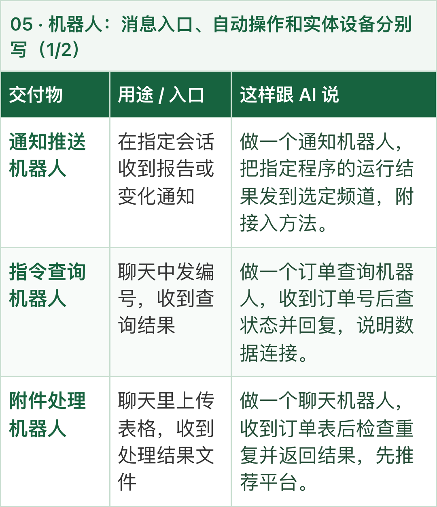
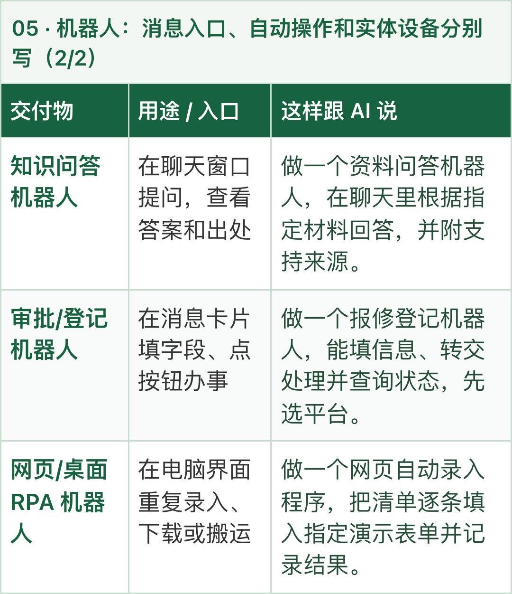
附件处理机器人可以有一个很直观的过程：在聊天窗口发来表格，程序下载附件，检查字段，把重复或缺失的记录列出来，再返回结果文件和处理说明。
这条流程如果规则固定，可以不调用模型。若它还会判断表格类型、选择处理办法，就可能结合上一组的 Agent。机器人提供消息入口，Agent 描述其中的任务执行方式，两者能组成同一件产品。
单向通知与双向交互也要分清。能向群里发报告，不代表已经能读群消息、接收附件或处理按钮点击；这些需要平台相应的接口与权限。Telegram Bot API、Slack 消息推送说明
制作与运行条件：消息机器人要连接选定平台的发消息、接收事件、文件或交互接口；它的处理程序仍须在本机或服务端执行。通知用的 webhook 不一定具备接收消息和附件的能力。查询和固定规则处理可以不用模型，问答或 Agent 能力按需另接模型与检索。网页/桌面 RPA 则依赖浏览器自动化或应用控制工具、可访问页面及所需登录条件。
除了拿到这次的结果，还可以留下以后继续执行的办法。程序处理什么、从哪里启动、结果去哪里，都要具体。
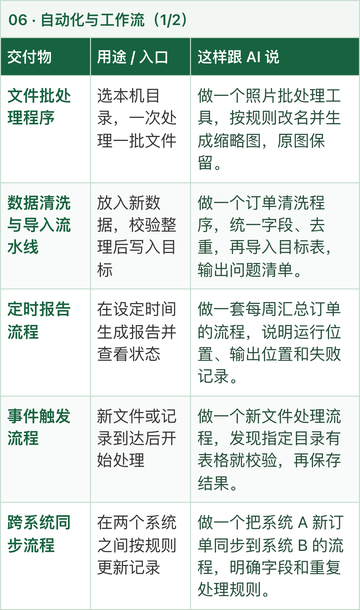
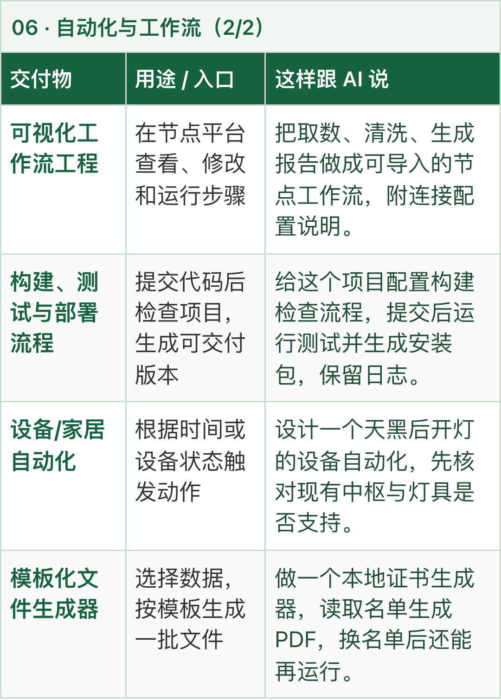
可以从一个证书生成器开始：确定版式，把姓名、活动名和日期设为替换字段，再让程序读取一份虚构名单，为每个人生成文件。更换名单，重新运行，就能得到下一批。
交付可以是一个简单窗口：选择名单、填活动名称、点击生成，结果进入指定文件夹。试用时看看长名字是否溢出、有没有漏文件。这样，读者能拿到本次证书，也能拿到下次继续使用的程序。
定时运行和收到文件后自动启动，需要另配触发机制与执行环境。n8n 的工作流可以导入导出，但定义文件要在相应平台中加载、配好连接后才会执行；写好程序或拿到工作流文件，不等于已配置好未来运行。n8n 导入导出说明
制作与运行条件：本地处理可以使用 Python、Node.js、pandas、Pillow、FFmpeg 等适合输入类型的工具；模板生成还需要版式与字段规则。定时或事件启动必须配触发机制和执行环境，跨系统同步必须有两端的接口或导入导出路径。节点工作流需要兼容的平台；构建流程需要对应工具链；设备自动化需要中枢与兼容设备。这些条件随交付组成写清，不因生成了脚本就视为全部配置完成。
有些成果的使用者是另一个程序。它按约定提交数据，拿到查询、计算或处理结果；这样的服务也可以成为独立交付物。
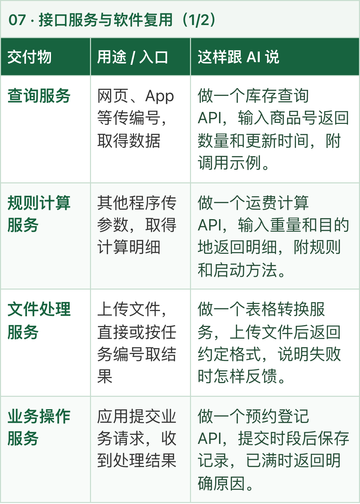
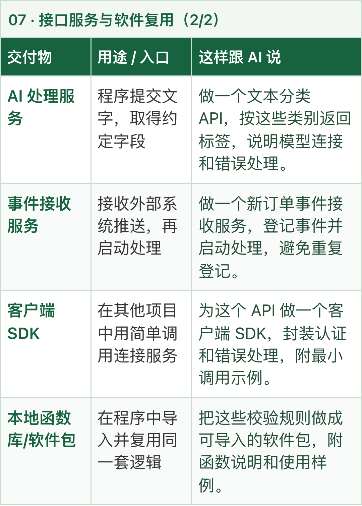
例如做一个运费计算服务：网页或小程序把重量、目的地和运输方式传给它，它按约定规则返回运费明细。之后再增加一个查询机器人，也可以调用同一个服务，不必重写计算逻辑。
API 是约定的调用入口。接口说明、服务代码与已运行的服务，是不同交付状态；SDK 则是方便另一个程序调用服务的代码包。试做时先用几组示例输入调用，检查返回与错误说明，再考虑接入应用。FastAPI 的服务与接口文档示例
制作与运行条件：服务需要后端程序、运行环境及必要的数据/文件存储。纯查询、规则计算或格式转换不必调用模型；AI 处理服务才需安排模型连接。对外调用要定义参数、返回、错误与访问方式；事件接收还需来源可送达的地址和重复处理规则。SDK/软件库需要目标语言的运行环境，前者仍依赖被调用的服务。
知识库可以从一批整理好的文件开始，也可以继续做成搜索、问答和可复用的工作能力。先看自己想怎样使用资料。
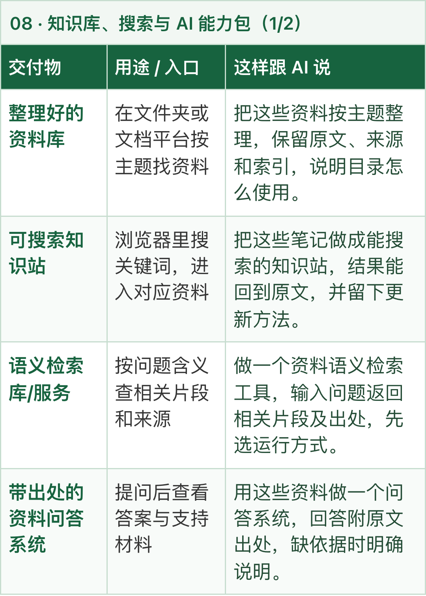
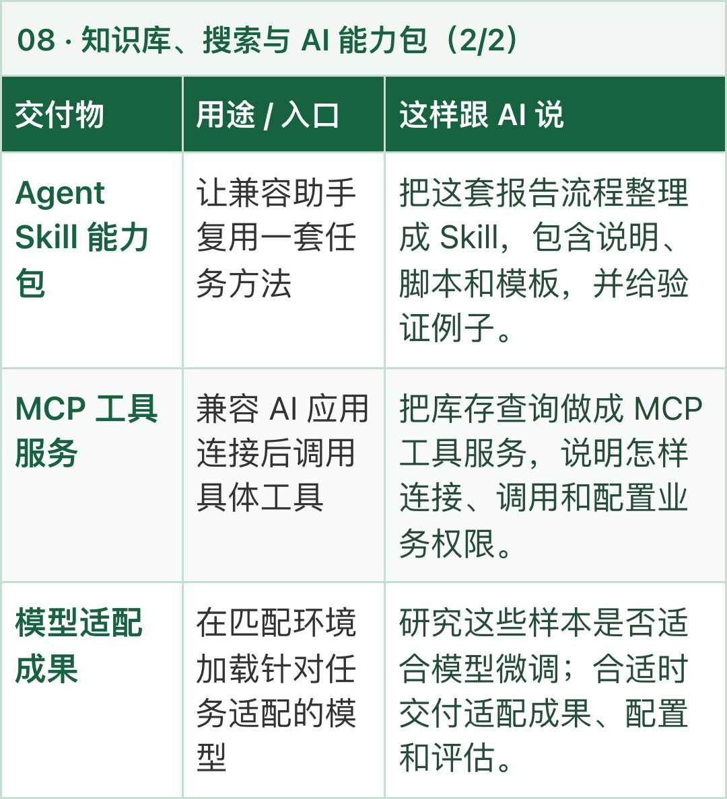
一批读书笔记可以先整理成有来源的目录；加入关键词搜索，就能快速找到对应页面；再接检索和模型，可以尝试根据资料回答问题，并给出支持片段。每一步都可以单独成为有用的作品。检索问答会把找到的材料交给模型组织回答，并不自动意味着重新训练模型。Dify 知识与检索说明
Skill 可以保存一类任务的方法、脚本与模板，交给兼容的 Agent 宿主使用；MCP 服务可以把“查库存”“处理文件”等能力接给兼容应用。它们通常是助手会用到的能力，仍需写明安装或连接位置。Agent Skills 格式、MCP 架构
平台角色提示词与助手配置已列在第四组，这里不再重复增加一项。聊天问答机器人也可以连接本组的检索问答系统，它们分别说明入口与背后的能力。
制作与运行条件：关键词搜索不必用生成模型；语义检索需要表示与索引工具，可以本地或云端运行；资料问答还需生成模型，并按设计选择检索、重排等组件。Skill 依赖兼容宿主及包内脚本的运行条件；MCP 服务依赖兼容应用和工具背后的业务连接。模型适配另需训练/推理工具、数据、算力与匹配基础模型，先评估是否有必要。
清洗好的数据、会重算的工作簿、能再次运行的分析过程，也都是可以拿到并继续使用的成果。
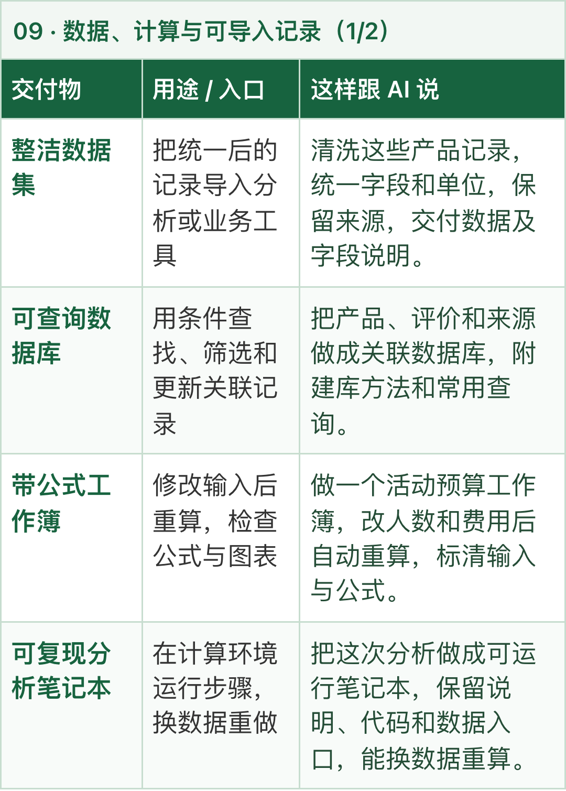
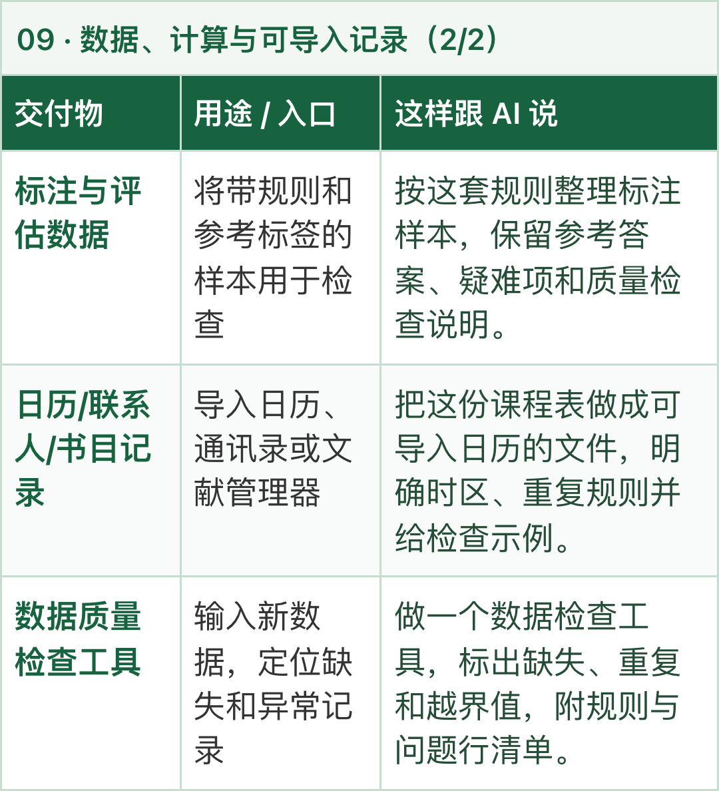
同样是一份产品资料，可以先整理成行列记录；当每款产品还对应多条评价和多个来源时，也可以用有层次的结构保存关系，再转成工作簿、报告或页面。CSV、JSON 是按数据结构选择的载体，不必为了显得完整同时生成全部版本。
如果想亲自调假设，可以试一个预算工作簿：改人数、改场地费，看总支出怎样变化。若还想知道每一步分析怎样完成，则可以保留能运行的计算笔记本。Jupyter 笔记本说明 日程也不一定停在文字里，还可以导入日历，实际检查日期、时区和重复项。
制作与运行条件：数据处理可采用程序与数据库工具，工作簿需要能计算公式的兼容软件，笔记本需要相应 Python/R 内核和依赖。本地文件处理一般不需外部模型 API；自动取数或同步时再接数据源。交付数据还要保留字段、单位和来源，导入日历时说明时区与重复规则。只有数据和公式时，不应称已有完整业务界面。
熟悉的文字工作也能打开新方向：做一本能放进阅读器的书、一份可填写表单，或一套打印后能玩的教具。
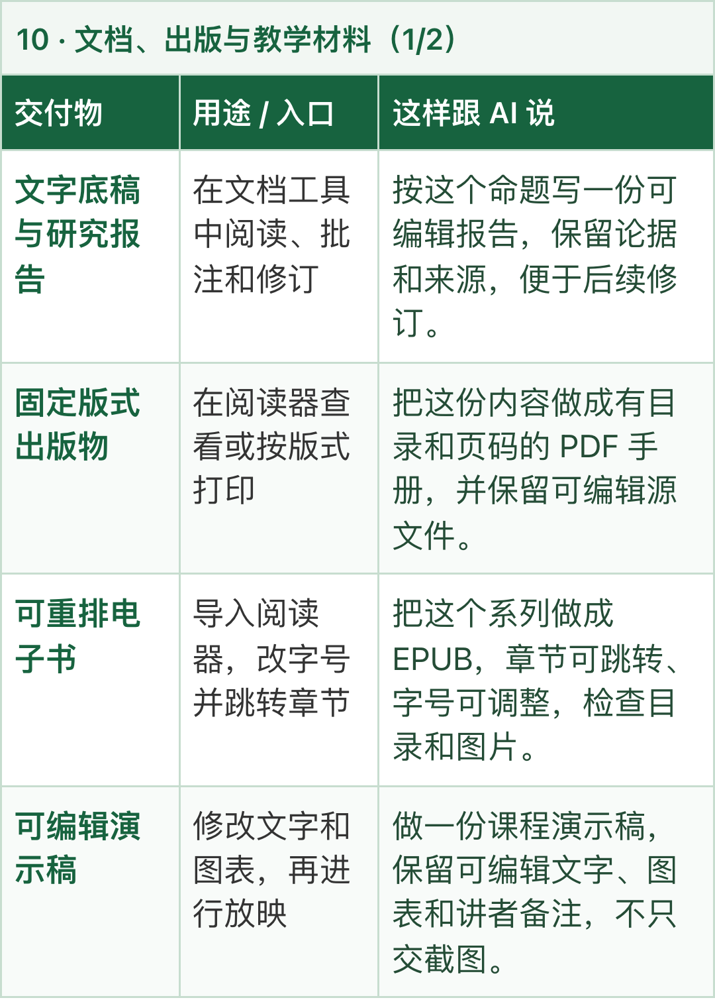
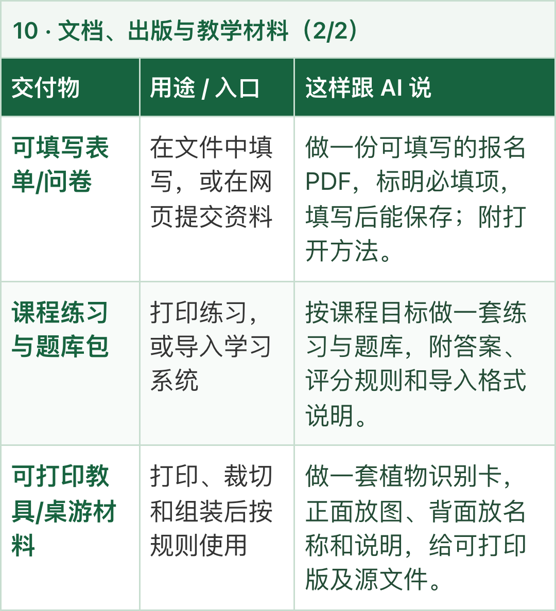
例如把一个系列的文章做成电子书：打开目录跳到某一章，调大字号，在阅读器里继续读。也可以做一套植物识别卡，正面放图，背面放名称与说明，打印后裁成卡片。
这些作品值得在打开或打印后看一遍。目录有没有跳对，长段落是否溢出，卡片正反面能否对齐，都属于作品本身。需要别人继续改的演示稿，则要保留文字和图表对象，不能只交一组页面截图。
制作与运行条件：文档可用 Word、LibreOffice 等编辑，PDF 需排版/导出和字体条件，EPUB 可用 Pandoc 等工具制作后在阅读器检查。演示稿要保留可编辑对象；文件表单需兼容阅读器，在线问卷则另有页面、后台或表单平台。可打印材料要核对实际尺寸与版式。生成后的阅读、修改和打印不必每次调用模型。
设计成果可以是一张成图，也可以保留图层、路径、组件和交互关系，方便下一次继续改。
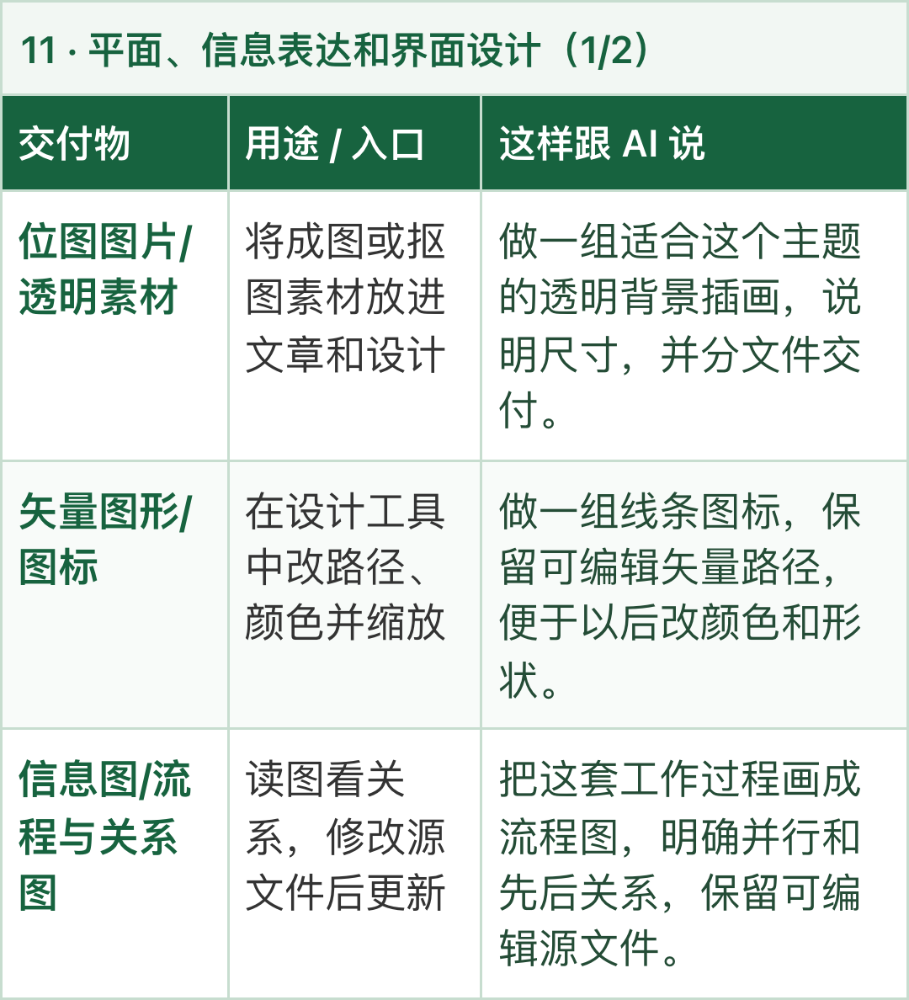
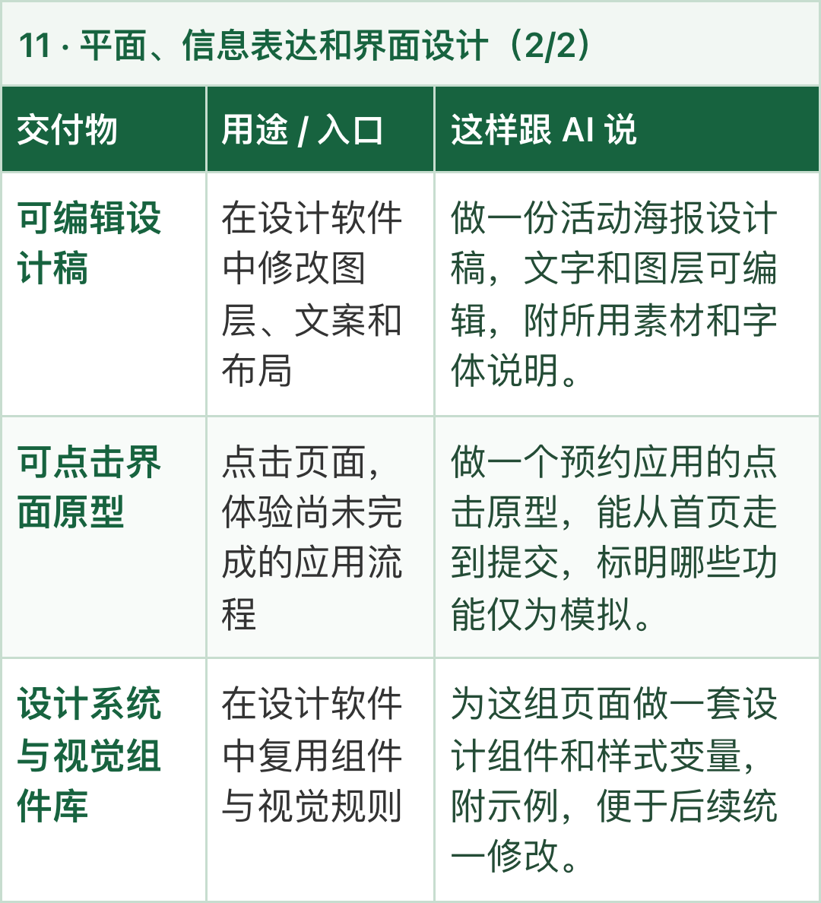
想做一组自己的图标，可以把交付要求写到“以后能改颜色、线条和形状”。需要的是可编辑路径时，就让 AI 说明生成和编辑方式，再打开文件选中对象试改，而不只看缩略图。
界面原型也适合第一次尝试：从首页点进详情，再点预约按钮，先体验流程是否顺畅。此时可以还没有真实订单和账户；原型中的跳转与实际业务系统分别确认。视觉组件放在本组，真正供代码项目导入的程序组件见第三组。
制作与运行条件：位图可以通过绘图或生成工具制作，矢量与分层设计需要对应编辑器及可编辑对象；图解可使用图表程序、Mermaid 或设计工具。设计稿可能依赖素材、字体和软件版本，设计原型的跳转不证明业务后台已完成。需要复用到代码里的组件，要交对应程序包和集成说明，不能只交设计截图。
声音、视频和动画的交付，既可以是播放文件，也可以是一套能继续剪、继续调的制作工程。
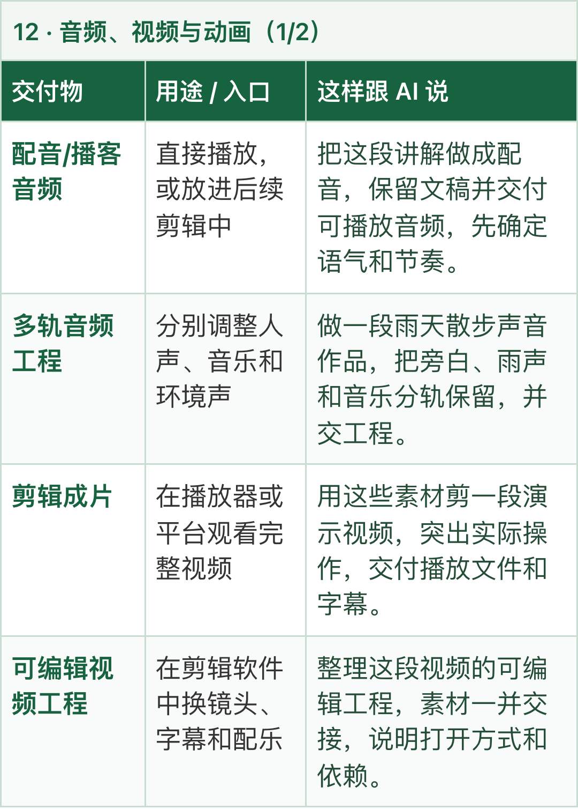
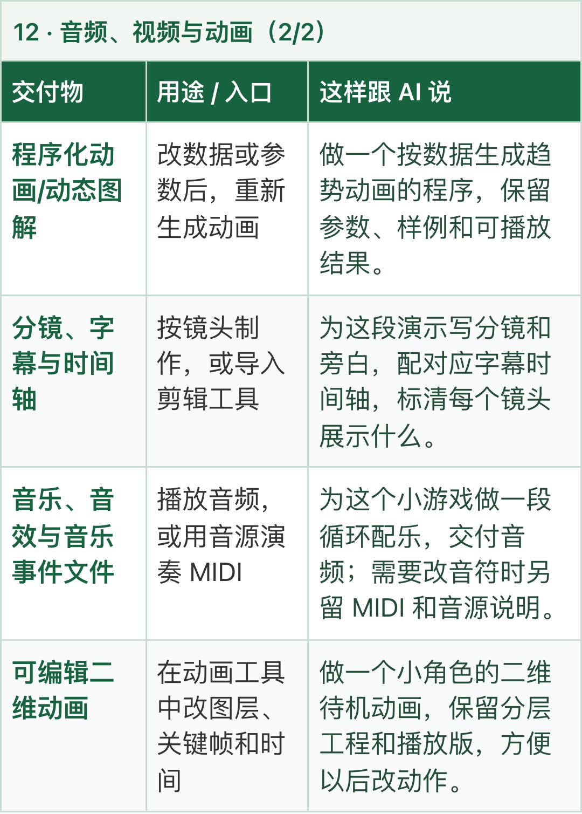
想做一段“雨天散步”的声音作品，可以把旁白、雨声和音乐分开保留。觉得雨声太大，只调低这一轨；想换旁白，就替换对应片段，再导出播放版。
视频同理：成片拿来播放，工程拿来继续剪。字幕、素材位置和所用插件需要一起交接。MIDI 记录的是音符和演奏事件，听起来怎样还取决于音源；它与一段录好的声音有不同用法。MIDI 官方说明
制作与运行条件：录音/合成、音频编辑、剪辑与动画是不同制作路径，可用相应工具组合，格式转换可用 FFmpeg。生成音频或转写时可能调用云端/本地模型；播放成品无需继续调用。编辑工程要附素材和插件条件，MIDI 要有可用音源，程序化动画要有生成环境。媒体生成工具是否可用应先确认，不能只凭需求承诺已有该能力。
从一个自己熟悉的小物件开始，三维可以让人获得转动观察、摆放和修改空间对象的体验。
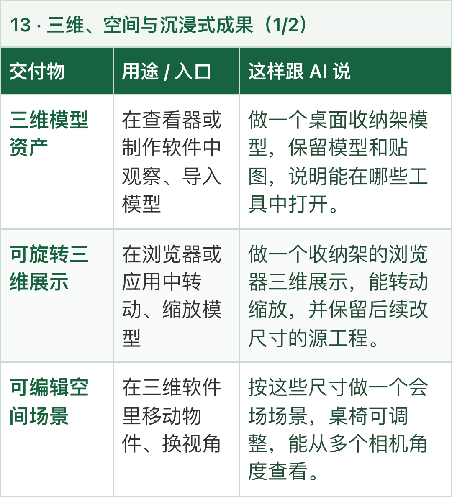
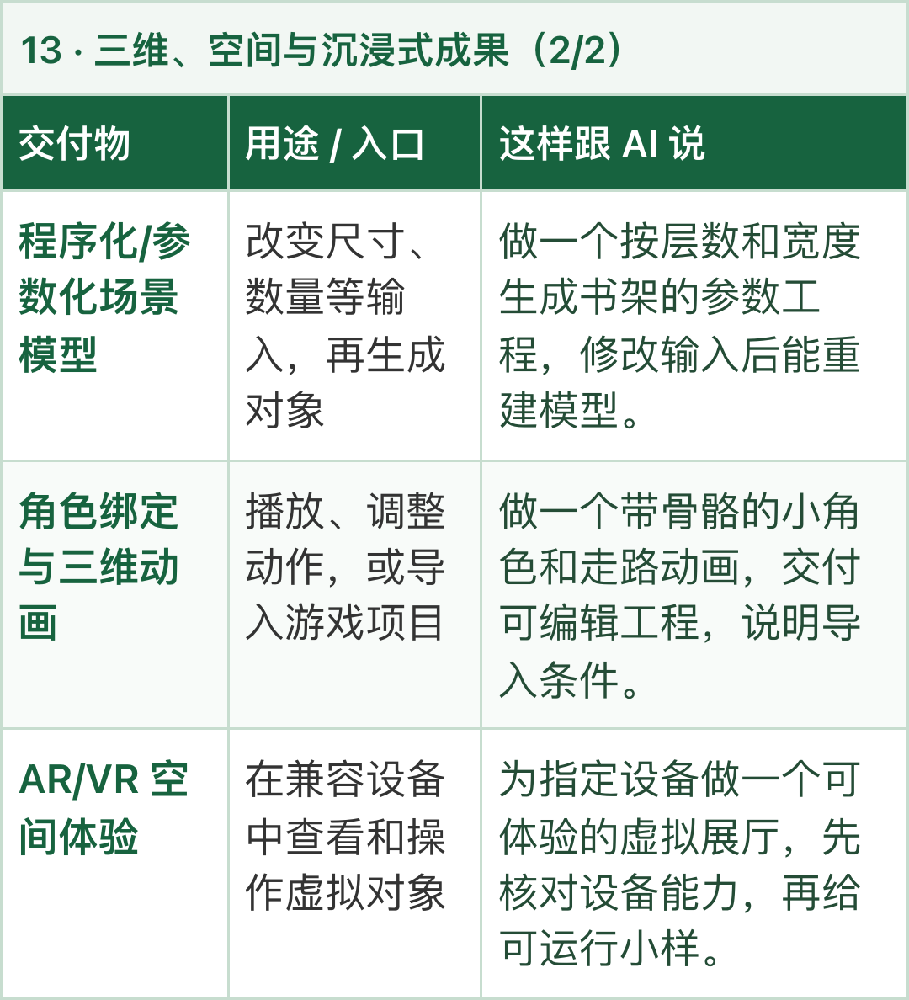
可以先试做一个桌面收纳架：上层放笔，下层有小抽屉，侧面留出耳机位置。先转到侧面看深度，再转到背面看开口。即使暂时不制作实物，也能试着用立体对象思考设计。
接着提出把上层加高，便要确认修改在哪里发生。展示页可能只支持旋转，真正改结构需要回到源工程；若希望输入数字就重新生成，应进一步要求参数或节点。建模工具与查看工具可以不同，模型交换文件也不一定保留完整的制作关系。Blender glTF 文档
会场布置也可研究同样的路径：在统一场景中移动桌椅、调整通道，再换视角观察。是否适合采用这条路线，要看需要的尺寸、修改与展示范围。
制作与运行条件：建模与展示可以采用不同工具，例如在 Blender 等工具中制作，再导出兼容模型供浏览器查看；参数生成需要脚本或节点，角色动画需要绑定/动作支持。浏览器展示需要实际展示程序，AR/VR 还需匹配引擎、设备 SDK 与硬件。普通建模与查看不必调用外部模型 API，格式、材质与动画兼容要另行检查。
如果希望继续按尺寸设计，或研究怎样制作实物，就可以认识 CAD、装配、切片和电路工程等更具体的成果。
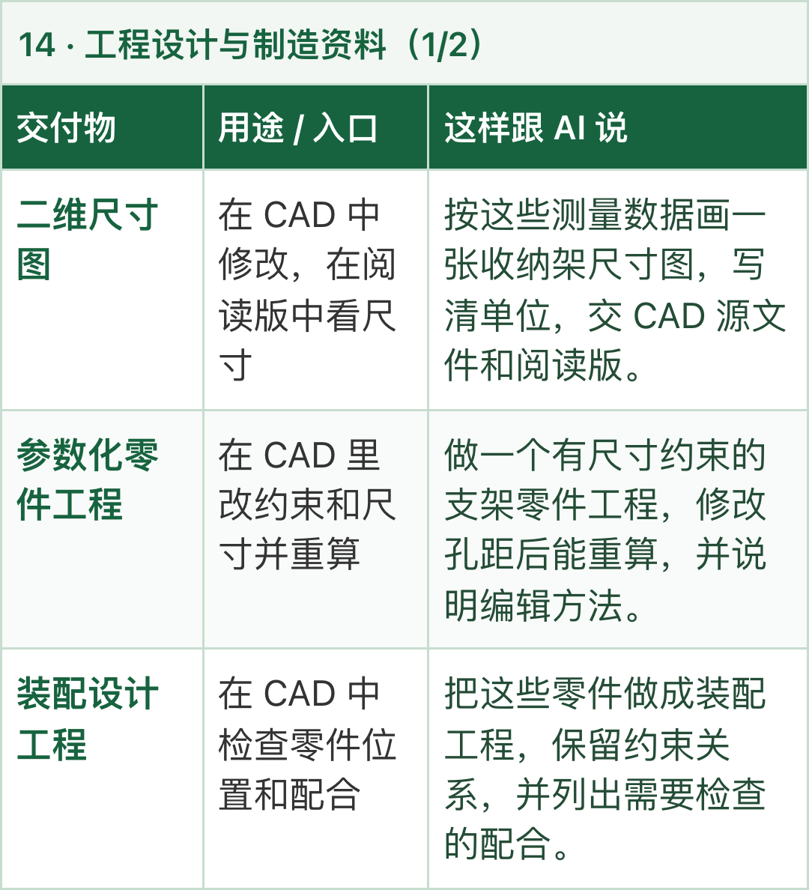
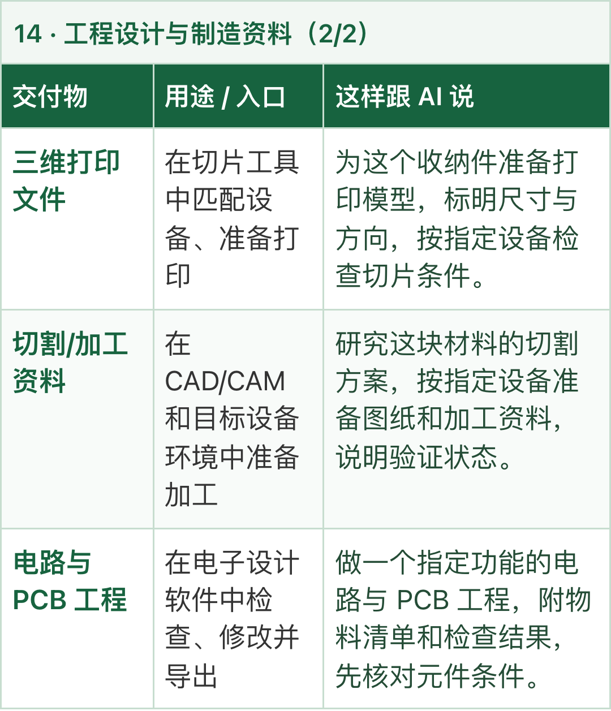
延续收纳架的想法，如果想明确板材厚度、抽屉宽度和零件配合，就可以研究参数化 CAD。尺寸与约束保存在工程中，修改参数后重新计算，再检查结果。FreeCAD 参数化说明
希望继续打印或加工时，还要匹配材料、切片或刀路与具体设备。可以从一个简单零件或小样开始；漂亮的展示模型、可编辑工程和适合设备的生产资料，各自承担不同工作。装修的探索性布置图与正式施工成果，也应按实际用途区分。
制作与运行条件：图纸和零件需要 CAD，装配需要约束和配合能力，打印需要切片，切割加工需要 CAM 与对应设备设置；电路工程可研究 KiCad 等 EDA 工具与元件库。它们通常不依赖外部模型 API。尺寸依据、材料、单位、工艺和设备决定成果可用范围；交换模型不一定保留参数历史，未验证的机器指令不能视为通用生产文件。
地点可以摆到地图上，公式可以留下计算过程，实验可以形成可重新运行的分析或仿真。这些都可以从小范围尝试。
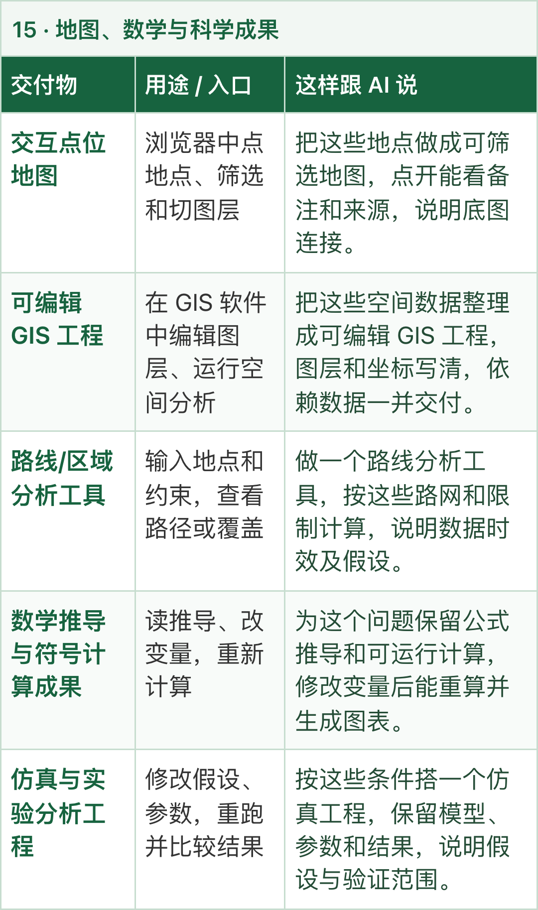
一个小尝试是把自己收集的地点做成地图：点开某个点，看到备注、照片和来源；按类型筛选，观察它们怎样分布。交互页面、空间数据和可继续编辑的 GIS 工程可以按用途组合交付。
科学计算则可以从一个具体假设开始：改变初始条件，重跑计算，再看曲线怎样变化。此时要留下模型假设、参数和数据，不能只靠一段动画判断计算是否成立。计算笔记本的通用形式已在第九组解释，本组关注推导、空间分析和领域模型。
制作与运行条件：交互地图可用地图库，地理工程可用 QGIS；在线底图、地理编码或交通数据可能需要服务与密钥，也可以按条件使用本地数据。推导与计算可用 LaTeX、符号/数值工具和笔记本，仿真需要领域软件、模型、参数与算力。专业计算不必默认接生成模型，数据时效和假设要随成果保留。
有些想法适合做成一件可以玩的东西。第一次不必搭建完整世界，一个动作、一条规则或一段分支故事也能形成作品。
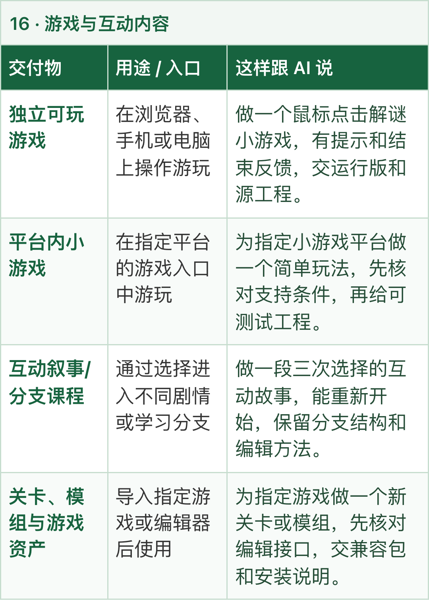
第一次可以做一个只靠鼠标点击的小型解谜游戏：玩家点物品、查看提示，解开一个机关后结束。源工程留下后，再尝试更换谜题、调整反馈或增加一关。
分支故事也可以从几次选择开始。预先写好的选项与剧情可以按规则运行；想让角色临时生成对话，再研究模型接入。手机、网页和平台小游戏是运行入口，游戏规则和素材仍需针对目标环境检查。Godot 工程导出说明
制作与运行条件：小游戏可以用网页代码或 Godot 等引擎，目标平台还要匹配导出工具链；平台内小游戏、关卡和模组依赖各自 SDK/编辑入口。预写剧情和单机玩法无需模型，动态对话或联网对战另加模型、网络和后台。源工程、运行版、素材与安装/导入方法按目标平台交付。
如果感兴趣的是实体设备，需要说清交付的是固件、驱动、节点、控制模块还是仿真。软件文件、硬件设备与整机制造分别看待。
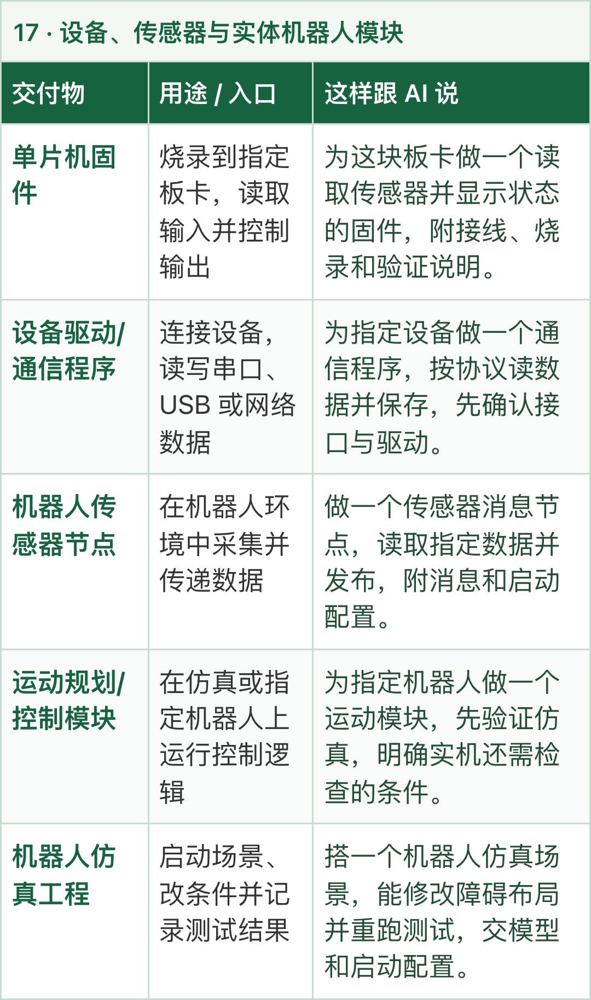
想接触硬件，可以先设想一个读取传感器并显示状态的小装置。需要确定板卡、传感器、通信方式和接线，再制作相应程序；没有设备时，也可以先做模拟输入或仿真，但要明确验证停在哪一步。
机器人里的采集节点、通信程序和运动模块可以分别交付。一个节点能读取和传递消息，不代表整机已经会导航或抓取；仿真场景能运行，也需要另外验证实机。ROS 2 的官方发布/订阅教程就是一个从小模块理解消息交互的入口。ROS 2 节点示例
制作与运行条件：这组需要指定硬件的工具链、驱动、协议与兼容元件；机器人节点可以采用 ROS 2 等框架，仿真需要对应模型和仿真器。基础采集、通信和控制不必使用大模型。接线、端口、依赖、启动配置及仿真/实机验证状态必须与实际对象对应；交付控制软件不等于制造或装配整台设备。
成果拿到后能否继续改、再次运行或交给别人，往往取决于配套交付。这一组列的是跨前面各组的复用与交接材料。
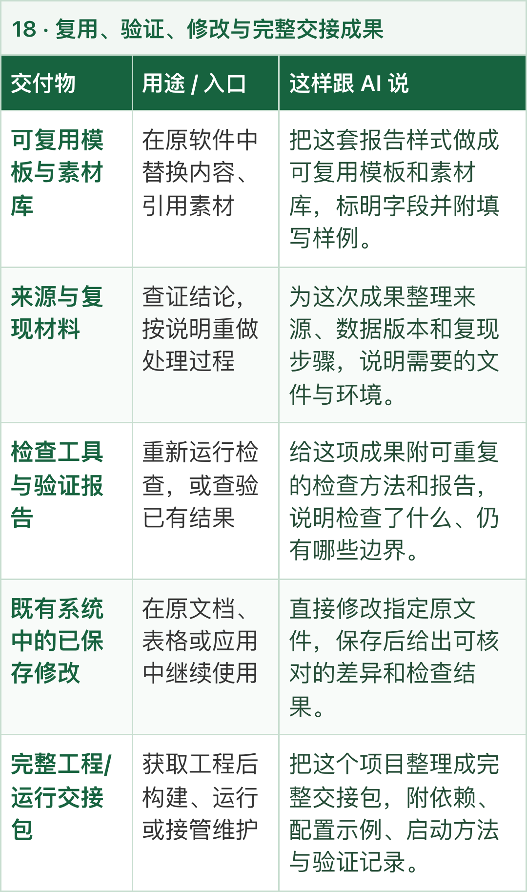
例如拿到一个文件生成器，能够点击运行固然重要；以后想换模板，还需要模板源文件、字段说明和一份可核对的样例。交给别人继续使用时，再说明依赖、输入输出和启动方式。
模板在这里集中列为复用资产，真正读取数据并生成文件的程序已列在第六组。另一种交付是原位置已经完成的修改：表格更新了、应用修好了、文档保存了。它不一定新增文件，但应有能确认修改生效的结果。
制作与运行条件：交接材料依赖原成果对应的编辑器、运行环境与连接条件，版本管理可用 Git，按需要补依赖管理或容器配置。文件模板和素材不必调用模型，生成程序和服务则保留各自依赖。检查报告应说明实际检查范围；原系统更新应给可核对的结果。仓库或压缩包负责组织材料，本身不代替可运行验证。
可以留意自己在哪一行停了下来：是手机上的小应用，聊天里的机器人，能改尺寸的模型，还是属于自己的声音工程？
第一步可以先描述想拿到的东西和使用动作，让 AI 调查适合的方法。例如：
想试做一个桌面收纳架模型，上层放笔，下层有两个小抽屉。希望能换角度观察，后面还能改尺寸。请先研究适合的制作和查看方式，做一个简单版本，说明会交付哪些文件、怎样打开、需要哪些软件或接口。
也可以把目标放在熟悉的软件里：
想在浏览器里选中文字后保存摘录、网址和备注。先做一个只在指定页面生效的小扩展，能在本地查看并导出记录。请说明安装方法，以及以后增加摘要功能需要什么连接。
不需要先替 AI 选好所有工具，也不必一次做齐每一种版本。先有一个范围明确的小作品，实际打开、操作和修改，再决定是否继续。
转动那个模型，换一份名单，保存一张清单，或者给助手一个新问题。对下一件作品的想法，往往就从这些具体操作里出现。
旁观机器 · MACHINE OBSERVER